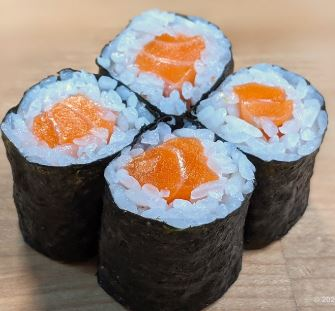

|

|
INGREDIENTS:
- Sushi rice
- Nori seaweed sheets
- Cucumbers
- Avocado
STEPS:
- Rice– 2 cups of uncooked sushi rice will make 10 hosomaki rolls. Once cooked, portion the rice into 80 grams (1/2 cup) for each roll.
- Nori– Briefly roast the nori sheets by placing and turning each side over heat (like a cooktop/stove) but don’t let it burn. Because hosomaki are thin rolls, you only need half of a standard nori seaweed sheet. You will need to cut the seaweed sheet in half through the longer edge. Typical seaweed sheets are 8.3inch x 7.5inch (21cmx19cm). Cut the 8.3inch(21cm) side in half so that you have two thin but long sheets of nori.
- Fillings– whichever filling you choose to use will need to be cut into a uniform thin size to fit evenly down the middle of the roll. You will need a small dish of vinegar or water to dip your finger into to go along the edge of the seaweed sheet to act as a glue to hold the roll together.
- 2 Ways to roll hosomaki – A bamboo sushi mat is the classic way to roll sushi. Place a nori seaweed sheet onto the rolling mat. Top with 80g (1/2 cup) of cooked sushi rice and spread it out evenly over the nori sheet. Make sure to leave a 1cm gap along one side of the nori sheet so that it can be sealed. Add your desired filling in a straight line down the centre of the rice. Dip your finger into some water or vinegar and swipe along the 1cm gap on the nori sheet. Place your fingers over the fillings to secure them in place and with your thumb, lift the rolling mat on the side with rice to fold and roll the sushi onto the side lined with the water/vinegar. Gently press the mat to seal the sushi and then release. Done!
- Cutting the hosomaki – Sushi rice is very sticky and it can be hard to cut sushi rolls into pieces. You need to use a sharp knife and lightly wet it with some water to cut the pieces well. Make sure you don’t press the knife down and squish the roll when cutting the sushi. You need to cut forward or back instead of down. This will ensure the rolls are cut nicely. Usually, hosomaki are cut into small bite-size pieces so usually, I cut each roll in half and then each half into thirds. This means 1 roll will make 6 pieces of sushi. But it is truly up to you how small or big you want to cut the sushi rolls.
|